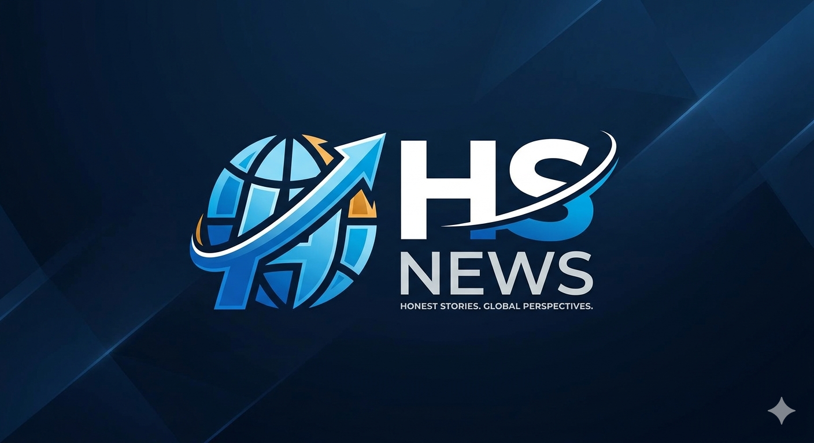
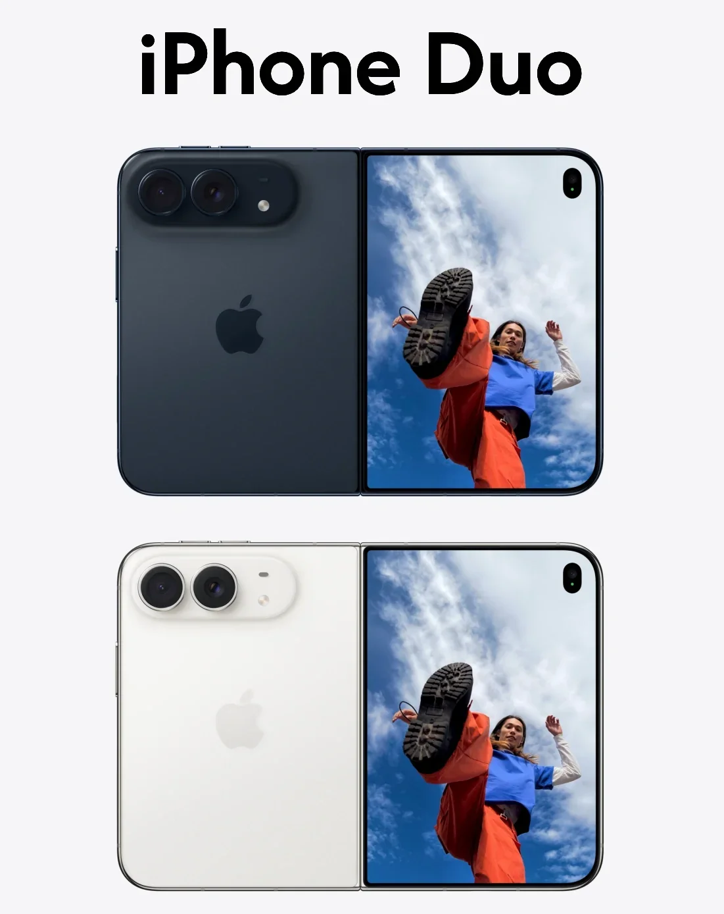
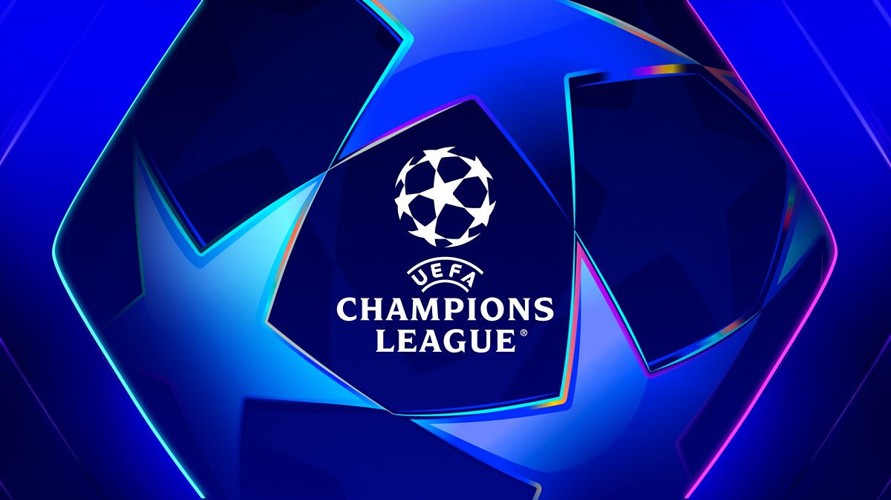

Pune crime news: The Mundhwa Assault (Keshavnagar Spitting Dispute, victims were hit with iron rods and verbally abused)
Pune crime news: Sinhagad Road Murder: A 19-year-old youth named [identity protection by HS] was brutally stabbed to death by three minors at Bhar Chowk following a minor dispute.The Sinhagad Road Police Station and the Crime Branch cracked down swiftly on the group, arresting the adult conspirators and detaining two minors who were involved in executing the ambush.
Pune News: 🪔 Ganeshotsav Celebrations & Highlights: Over 35,000 women participated in a grand Atharvashirsha recitation in traditional attire before the Shrimant Dagdusheth Halwai Ganpati. Pune Metro extended its operational hours to accommodate late-night festive crowds.
White House Press Bans: President Trump announced an immediate ban barring CNN, MS NOW, and Politico from the White House, accusing them of spreading fake news
🇬🇱 The U.S., Denmark, and Greenland reached a new security agreement on September 18, 2026, that expands the American military footprint in the Arctic while prohibiting non-NATO adversaries from establishing bases or making sensitive investments on the island. The accord is scheduled to be signed on the sidelines of the United Nations General Assembly, though it still requires formal parliamentary approval in both Denmark and Greenland.
FIFA™ U20WWC Knockouts results (Poland 2026) :
| Matchup | Result / Outcome |
|---|---|
| Brazil vs. USA | 1-1 (Brazil won 5-4 on penalties) |
| Argentina vs. South Korea | 0-1 |
| Spain vs. Portugal | 2-0 |
| Italy vs. China PR | 1-1 (Italy won 5-4 on penalties) |
| France vs. Canada | 1-3 |
| England vs. Nigeria | 0-3 |
| North Korea vs. Japan | 2-0 |
| Poland vs. Colombia | 0-1 |
At Apple’s highly anticipated "Surprise and Shine" keynote event on September 9, 2026, the tech giant officially entered the foldable market by unveiling the iPhone Duo, its first-ever foldable smartphone. The launch was also historic as it marked the major debut of Apple's new CEO, John Ternus, who recently succeeded Tim Cook.

The 2026–27 UEFA Champions League has officially kicked off its league phase, with Matchday 1 concluding. Following dominant opening performances, Paris Saint-Germain, FC Bayern Munich, and FC Barcelona sit at the top of the preliminary 36-team standing.The tournament will now pause for a month-long international break before returning for Matchday 2 in mid-October.
